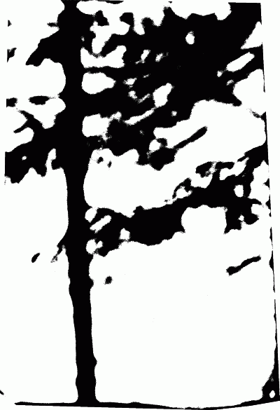

Гистограмма в ImageMagick
Есть двухцветное изображение и нужно подсчитать процент одного и другого цвета.
Например изображение может выглядеть так:

Загрузить изображение для самостоятельной работы.
Для решения используем программу ImageMagick. Программа бесплатная, с открытым исходным кодом, работает под Windows и Linux, под Windows не требует установки и ничего не записывает в реестр операционной системы.
Программа работает из командной строки.
Дальнейшие объяснения касаются Windows, под Linux команды будут выглядеть точно также.
Загрузите пакет программы по ссылке. Необходимо загрузить версию обозначенную как Portable Win32 static, на момент написания этого документа это ImageMagick-6.7.1-Q16-windows.zip
Распакуйте все из этого архива в новую папку, например: C:\Tools\ImageMagick
Нужная нам утилита запускается из командного интерпретатора, поэтому сначала запустим его через Пуск\Выполнить, где введем:
cmd
Нужная нам утилита называется convert, введем в командную строку следующую команду:
C:\Tools\ImageMagick\convert c:\temp\black-white-elnik.tif -format %c histogram:info:c:\temp\out.txt
Альтернативно, можно ввести команду выше сразу в строку меню Пуск\Запустить Windows.
Команда говорит следующее:
- запустить программу C:\Tools\ImageMagick\convert
- взять файл c:\temp\black-white-elnik.tif
- построить гистограмму (частотное распределение встречаемости пикселов каждого цвета)
- сохранить гистограмму в виде текстового файла в c:\temp\out.txt
Разумеется, чтобы программа заработала, вы должны проверить все пути к файлам и их имена.
В результате в файле out.txt появится таблица, где первое значение в каждой строке будет показывать количество пикселей данного цвета.
1063835: ( 0, 0, 0) #000000 black 2407325: (255,255,255) #FFFFFF white
Так что для выяснения количества в процентах остается только простая арифметическая операция. Например для выяснения % черного = 1063835*100/(1063835+2407325) = 30.64782%
Дата создания: 16.07.2011
Автор(ы): Максим Дубинин